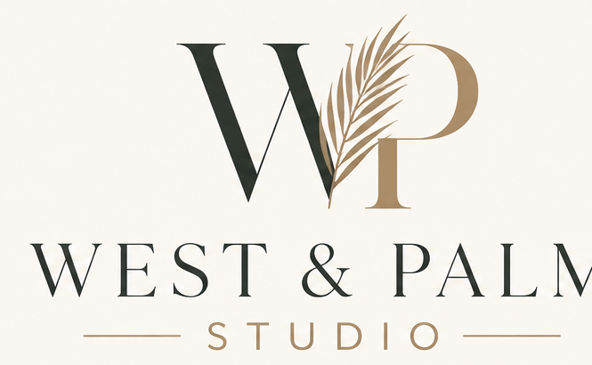

Personal service
You work directly with the person thinking about, designing and building your website.

About
Technology matters. So does knowing the person, business and purpose behind the screen.
Meet Sarah
Design came later. Technology didn’t.
Before moving into the travel industry, I spent more than 20 years working in IT, much of that time as an IT Manager for a prominent UK security company. That experience still shapes how I approach every project: thinking about structure, functionality and what happens behind the design, not simply how a website looks.
Eventually, that technical background collided with something more creative. I began designing and building websites for my own business and community projects. One website led to another. Then people started asking whether I could build theirs.
West & Palm grew naturally from there: creative thinking, technology, problem solving and the satisfaction of turning an idea into something real.
Why West & Palm
Personal by design
You work directly with the person thinking about, designing and building your website.
Design decisions are backed by practical technology, structure and an understanding of how the pieces fit together.
Your website and content remain yours. Ongoing care is available, but staying with West & Palm is a choice, not a condition.
Your business has its own audience and personality. Your website should too.
The studio
West & Palm brings the visual and technical pieces together so the brand and the website feel considered as one.

A different kind of studio
When you work with me, you're talking directly to the person thinking about your business, designing your website and working through the technical details required to make it happen.
I don't believe every business needs the same website. A travel advisor, Realtor, restaurant, consultant or community organization has a different audience, personality and purpose. Their websites should reflect that.
So we'll talk. I'll ask questions. I'll probably ask a few more. And then we'll create something that genuinely belongs to your business.
Based in Florida. Working beyond it.
Good ideas aren't particularly concerned with geography.
West & Palm Studio is based in the Lakewood Ranch area of Florida and works with clients locally and beyond.